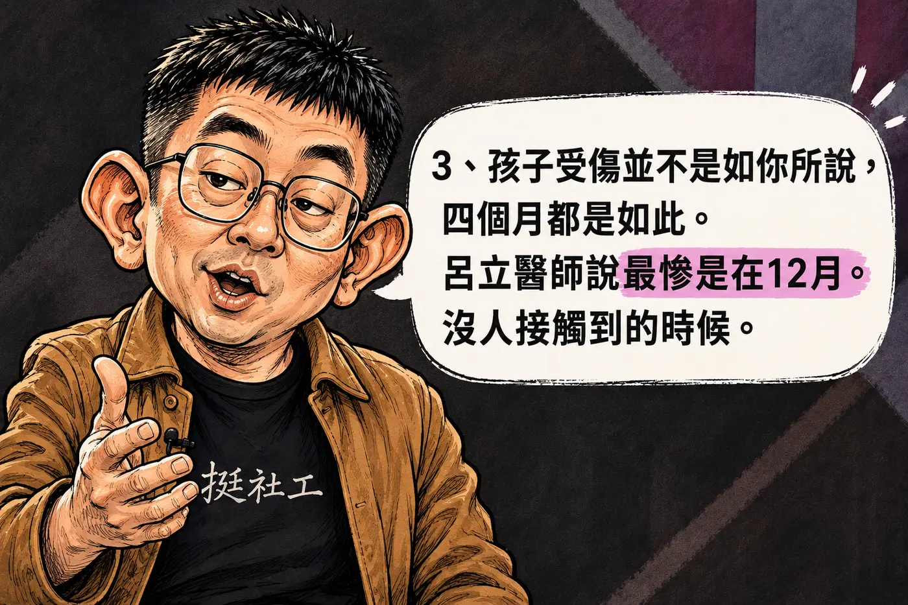

PINNED REPORTS · LATEST FIRST
置頂快報專區
把需要優先被看見的法院旁聽、案件追蹤、制度倡議與守護行動，整理成一座清楚可查閱的新聞牆。
EDITOR'S PICKS
最新置頂
排序｜發布日期由新到舊
-

《關鍵的倒數十七天》
得知第四顆牙掉落後，持續追蹤的是單據，還是孩子？把判決書所載LINE對話放回12月7日至24日的時間線。
閱讀完整專題 → -

《那一聲質問，落在每一個大人的心上》
從三顆掉落的乳牙、法官直指靈魂的追問，到責任通報的法律界限；那句話越過法庭，落向台灣社會每一個人。
閱讀完整專題 → -

剴剴案導覽簡介
兩頁 A4 導覽，整理三名案件關係人，以及新北樹鶯社福、兒福聯盟與臺北文山居托的權責及跨系統資訊關係。
閱讀完整導覽 → -

《多到抄不完的傷》
旁聽者記下傷勢分布圖的鑑定說明，整理庭訊觀察與公開開庭資訊。
閱讀快報 → -

保證人地位｜誰有義務把孩子接住？
從剴剴案理解保護義務、作為與不作為的法律界線。
閱讀專題 → -

第二章｜沒人要的孩子
收出養、照顧交接與制度責任的完整追問。
進入第二章 → -

第一章｜沒有父母的孤兒
從椅仔姑傳說走入剴剴案；二十四篇動畫長卷與八篇完整正文。
進入第一章 → -

陳尚潔案二審準備程序
115年度上訴字第4688號｜9月16日下午2時30分，臺灣高等法院專一法庭。
查看開庭資訊 → -

羅氏兄弟冤案更審
最新進度、案件脈絡與完整文件。
閱讀案件 → -

把共同的支持，延續成另一份守護
1月11日反廢死護兒少大遊行活動公費結餘27,128元，已全數捐贈公益。
查看完整公告 →